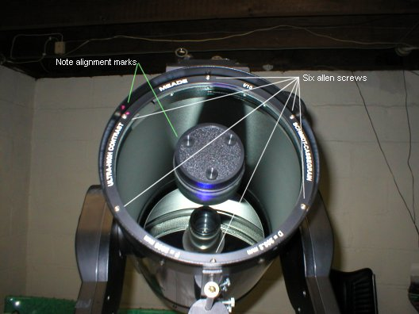
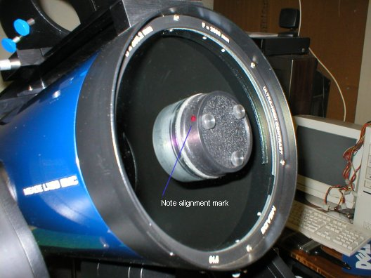
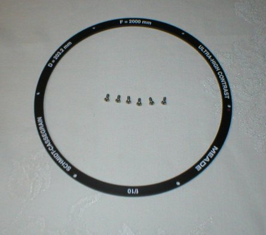
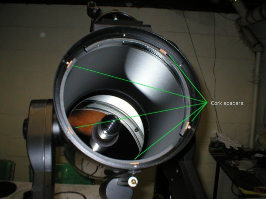
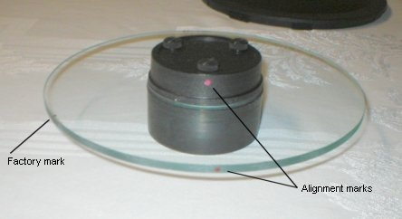
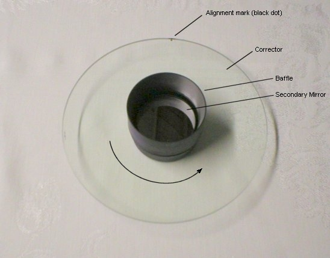
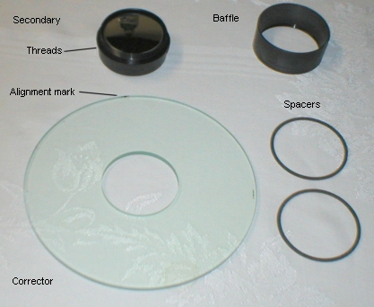

Corrector Removal
The LX90 corrector should never be removed unless absolutely necessary. Alignment of the optical components is critical to the quality of your observations. Each LX90 is aligned in the factory to it's best configuration, so that alignment must be maintained when removing the corrector for any maintenance. This is not a standard maintenance procedure and should not be undertaken by those inexperienced or unsure of themselves. I strongly suggest that this not be undertaken unless absolutely required.
Before Starting
Have your cleaning solution ready, to minimize time with the OTA open. Have a clean cloth ready to cover the OTA once the corrector is removed. You'll need a 3/64" allen wrench (one is provided with the LX90), cleaning supplies, and brushed cotton glass gloves (these gloves are lint free combed cotton, specially made for handling glass during assembly procedures). If you don't have the gloves, you'll need to be extremely careful when handling the corrector and the secondary. The secondary mirror should be avoided all all costs - DO NOT attempt to clean the secondary unless you're experienced at cleaning first surface mirrors.
Removal of the Retaining Ring
Around the edge of the corrector is a retaining ring, held in place by six allen screws.

The six allen screws, and alignment marks I applied for
reassembly
Before removing the screws and retainer, You need to make three marks on the components. One on the retaining ring, one on the inside of the OTA (both visible in the image above), and one more on the secondary holder (shown below) that radially aligns with the two marks on the retaining ring and OTA. I used fingernail polish to make these marks. They need not be precise to 10ths of millimeters, but as close as possible is best. I used a dab of polish, and then scribed a line in the center of each after they dried..

The alignment mark on the secondary
Be sure to cover the corrector when you create these alignment marks. I cut out a piece of paper in the form of a "doughnut" and layed it around the secondary holder before I started. This protects the corrector from damage by accidental contact, or dripping your marking fluid on it. Marks can be determined by setting a small ruler on the secondary holder, and marking the edge where it contacts each surface. Once all the alignment marks are done (and dry), we can continue on.
Tilt the OTA up slightly, around a 10-20º angle. Make sure the RA and Dec locks are well engaged. Remove the six allen screws securing the retaining ring. Note that they aren't very tight. Excessive tightness could distort the corrector and create optical aberations from stressing the corrector.

The retaining ring and six screws
Removing the Corrector Assembly
Once the retaining ring screws are removed, the corrector and secondary holder can be removed from the OTA.
Before you do, check the perimeter of the corrector for alignment marks.
Some Meade models have two white lines, or a white mark with a black line in the center. Others have a single black dot that marks the "top" of the corrector, and can be found near the top screw of the retaining ring. These alignment marks MUST be at their same location when the corrector is reinstalled. These are the "factory" alignment marks. Make note of them, and draw a diagram if you think you'll forget. If for some odd reason no marks are visible, take a "Sharpie" marker, and mark the top screw hole for the retaining ring, right on the very edge of the corrector. Make a small line (one or two mm long) towards the screw hole (the mark will be under the ring when re-assembled). Making a second mark 90º from the first is a good practice, since marks could be lost due to dew or cleaning - and it also prevents the corrector from being reinstalled with the wrong side facing out.
Make sure the RA and Dec locks are well engaged, again, to be sure.
Put on your gloves and grasp the secondary holder. Pull the corrector away from the OTA. Be sure to have your second hand underneath the corrector in case you lose your grip on the secondary. Take the corrector assembly and set it down on a clean cloth with the secondary mirror facing down. Cover the exposed OTA to prevent dust from settling on the primary mirror. Remember that your primary mirror is now exposed to the world - safeguard it while working with the corrector.
There are five cork spacers (your scope may have more or less) around the perimeter of the corrector. Make sure these aren't lost, and mark the location if any fall off. They must remain in place to center and isolate the corrector within the OTA cell. On older scopes, the corrector may be somewhat "attached" to these spacers, and could be hard to remove. An exacto knife could be used to break the seal between the two, preferably between the cork and the corrector, not the cork and the OTA. Leaving the cork attached to the OTA leaves them in place for re-assembly.

The corrector removed, showing the cork spacers.
The Corrector Assembly

The removed corrector
assembly, supported by the baffle on a clean cloth
With your corrector on a clean cloth, make a new mark on the edge of the glass, aligned to the mark previously made on the secondary holder at the very beginning. Once you've done this, you have all the alignment marks finished, and can reassemble all the parts as they were from the factory, without any new optical aberations introduced by misalignment.
Disassembly of the components
.
The corrector, flipped upside down with the baffle facing upwards.
Be Careful with this step, a "spotter" would be a good idea if someone is available
Start by flipping over the corrector (you do have your gloves on, right?) and grasping the secondary holder firmly from below with the baffle on top. With your other hand, unscrew (counterclockwise) the baffle from the secondary support. When the baffle is removed, there is nothing holding the corrector to the secondary - be careful here - set the baffle down and secure the corrector. Once the corrector is safe again, you can separate the parts. Some correctors have larger center holes than others, so it's important to center the secondary assembly in the corrector hole when re-assembling the parts. Mine was pretty tight, with only 1mm of space total from side to side.

The separated corrector assembly parts. The spacers go on each
side of the corrector.
At this point you can clean both sides of the corrector, using the recomended solutions. I make my own, but Dr P Clay Sherrod has an excellent formula, Directions are on his ASO website, and packages are available from OPT with the solution, cleaning pads and a recomended brush. When finished, reassemble the components (remember that one spacer should be on each side of the corrector - one between the baffle and the corrector, and one between the secondary holder and the corrector). The secondary assembly should be centered in the corrector and aligned with the new mark on the corrector edge. Remember that the factory alignment marks are on the "outside" corrector surface and should be on the opposite side from the baffle. Once the corrector is re-assembled with all the marks aligned properly, you can reinstall the corrector assembly in the OTA.
Reinstalling the Corrector Asembly
When reinstalling the corrector in the OTA, make sure that all cork spacers are in place, and that the original alignment marks are re-aligned. When tightening up the retaining ring, alternate between screws, and never tighten them much more than slightly over finger tight. If they're too tight, optical aberations may be introduced.
When finished, cover the corrector with it's dust cover and wait for a good night to re-collimate the scope. If you followed directions closely and didn't tamper with the secondary holder, collimation will only be slightly off and require a minimum of tweaks at high magnification.
| Back to Contents || Wedge adapter || Focuser || Azimuth adjuster || Weight Set || Dovetail ||
|| Compass || Polar || Pinouts || Tours/Ephemerides || LED Markers || Balance || Focuser Bearings ||
|| Corrector || Encoders
|| Firmware ||